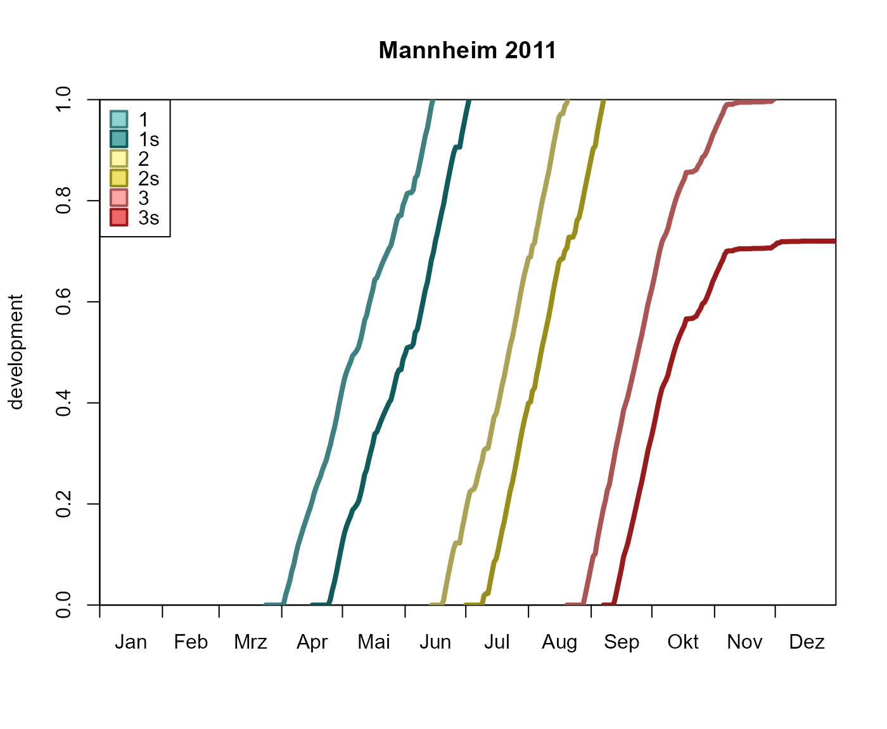

A development diagram illustrates the beetles' development of all appearing generations within a year.
Usage
plot_development_diagram(
.phenos,
.station = prop_stations(.phenos[[1]])[1],
.generations = NULL,
.colors = barrks_colors("diagram_lines"),
.fill = barrks_colors("diagram_fill"),
.labels = barrks_labels("diagram"),
.legend_col = TRUE,
.legend_lty = TRUE,
.group = TRUE,
.minmax_only = FALSE,
.fun_bg = NULL,
.lty = "solid",
.lwd = 2,
.date_split = NULL,
.date_stop = NULL,
.lty2 = "dotted",
.lwd2 = 2,
.fill2 = NA,
...
)Arguments
- .phenos
List of (named) phenology objects or a single phenology that will be plotted (see
phenology()).- .station
Pass a character vector to choose a station assigned to
phenoby its name, or pass a different station. Seestations_create()for details.- .generations
Generations that will be shown.
- .colors, .fill, .labels
Character vectors. Change the line colors, fill or labels of the generations starting from the first generation followed consecutively by elements for the other generations (including sister broods).
- .legend_col, .legend_lty
Manipulate the appearance of the legends for colors and line types. Pass
TRUE/FALSEto enable/disable the respective legend. For the customization of the respective legend, a list of parameters for graphics::legend can be passed.- .group
Select the phenology objects that will be used to draw the filling. It can be a character vector of the phenology names, an integer vector of the phenology numbers, or
TRUEif all phenology objects should be used.- .minmax_only
If
TRUE, only the minimum and the maximum development line will be plotted.- .fun_bg
Function to draw a background.
- .lty, .lwd
Use specific line types and line widths. Vectors of the same length as
.phenoswill assign the values to the respective phenology.- .date_split, .lty2, .lwd2, .fill2
When
.date_splitis reached, the appearance of the plot will change according to the respective values.- .date_stop
If specified, no data will be plotted after the respective date.
- ...
Parameters passed to
base::plot().
Examples
# \donttest{
# calculate phenology
p <- phenology('phenips-clim', barrks_data('stations'), .quiet = TRUE)
# plot development diagram of the station 'Mannheim'
plot_development_diagram(p, 'Mannheim', .lwd = 4, .legend_lty = FALSE)

# }